直接按攻击

横版武侠动作 · Godot
一封烧残的求援信，把你引到雨夜山门。选好同行侠客，从章前分镜启程，在交锋中读招、换线，决定是继续追击还是收招退身。可独闯七章十四关，也可和朋友同屏闯关或对招。探索沿途的封签木箱，还能为人物传补齐江湖旧事。
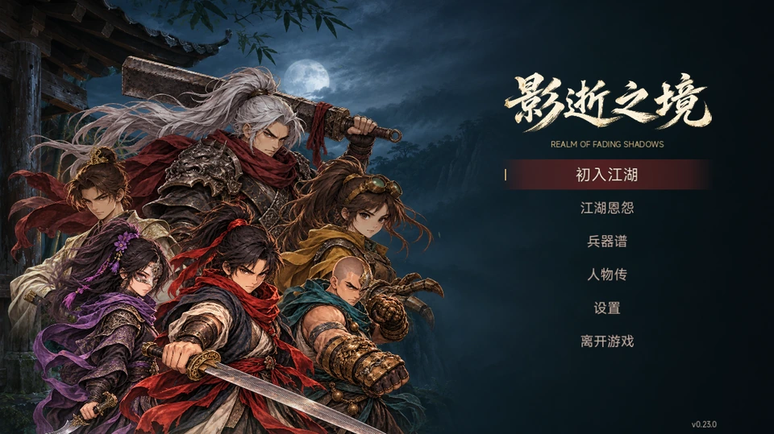
Windows / 横屏 Web 开发版 0.23.0 · Steam 发行筹备
先看玩家怎样在一条线上交手，再看侧闪、投掷和双人配合如何改变局面。
风格参考《影之刃》系列的暗黑江湖，动作参考聚焦兵器的重量、相邻动作的衔接，以及打完一套后的收势。白风的轻剑强调点刺和回锋，赤砧的重锤先沉肩蓄势，锤落下去后还得收住重心。《影之刃零》官方参考
12 名角色各有 7 种普攻动作，使用同一套操作理解不同兵器。地面两击起手后，第三击可按前追击、按后退击，或直接完成常规收尾。跑中攻击和空中攻击各有独立动作。


前两击共用同一套起手，降低第一局的操作门槛。第三击才让玩家选择。常规收尾消耗最少的位移，向前追击能把退开的敌人留在压力里，也会因收势较长露出反打窗口。退身收尾能保住距离，却可能放弃继续压制的机会。连击可提前输入，角色会先打完当前动作。
进攻前先看距离和场地纵深。玩家可以侧闪换线避开直线压力，再利用对手收招的时机切回近身。
白风的挑灯斩是沿面向挑刺，打中后让对手离地。普攻或挑刺都要先站到交手纵深，刀光扫过与命中判定各有范围。
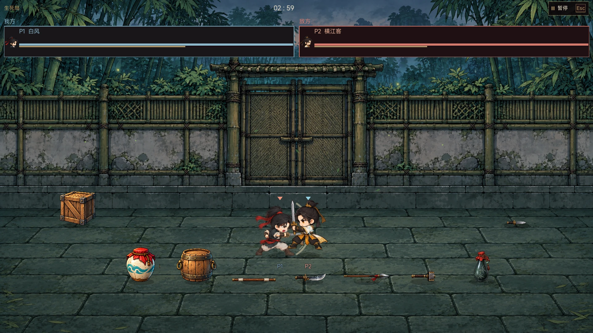
赤砧的横锤撞阵借跑动缩短距离，出手后要收势。白风跃起后可接燕落斜削，命中要同时看横向距离和双方高度，跳过对手头顶也可能挥空。


逐线飞芒沿面向送出细窄剑气，适合堵住一条进路。千线寂灭蓄势后绕身重斩，红光提示不可格挡。蓝光可防的提示与红光一起，让防守方判断该接招还是离开攻击范围。
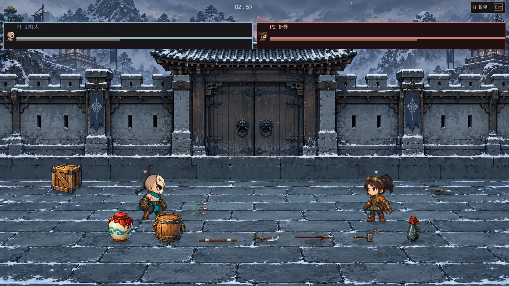
拾取要花站位和出手的机会。拉开半步捡兵器，能用新攻击方式再进场。场边的箱子能抛出，酒瓶也能在地面或跳起后投掷，逼对手重新判断进路。

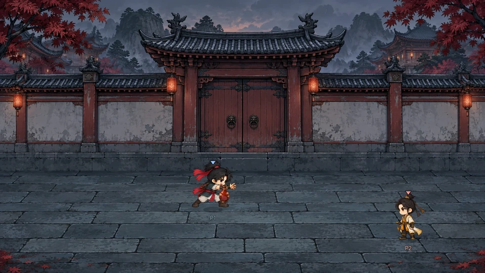
新版主线把同行侠客的选择和确认独立出来。已解锁角色可查看资料和招式，未解锁角色保留灰影。14 个关卡各有章前剧情分镜，用图文交代来路和目标，也允许跳过进入战斗。
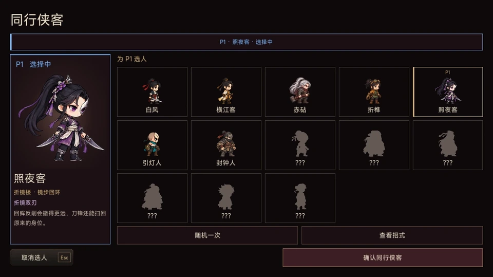
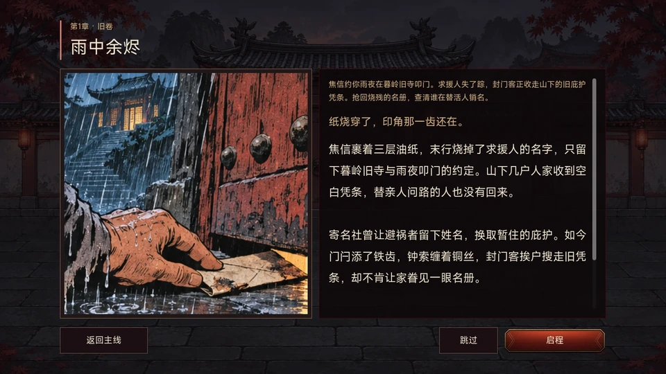
清敌后用路牌给出支路，把赶路与交锋分开。移镜先交代新场景、站位与敌人，然后再开下一波战斗。章节选择把场景预览与解锁进度放在一起，方便队友知道今天要从哪一关继续。
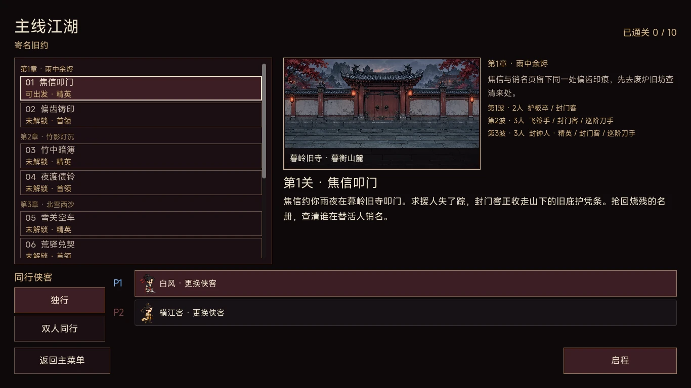
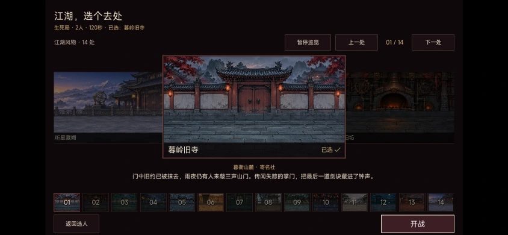
盐签作证把药品藏进可破坏物，玩家要决定何时清出安全空间拿补给。截闸反潮把闸坠放进战斗场景，击落时可砸到下方敌人，让玩家根据站位决定先触发机关还是继续进攻。
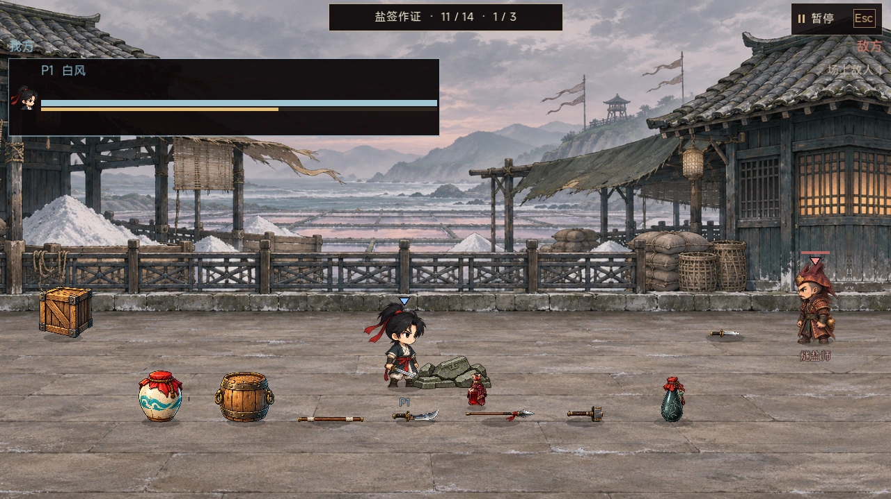
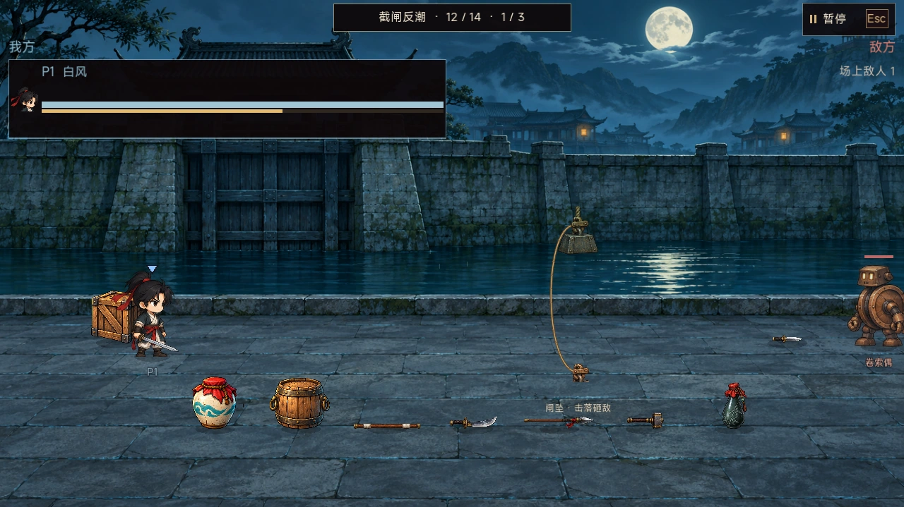
一人留在正面接招，另一人换线打断追击；也可以先清掉杂兵，再对付首领。两个人共享场地，谁先去捡补给、谁继续牵制，都会改变这一波的节奏。章节末把剧情、增益选择和解锁接回下一次出发。

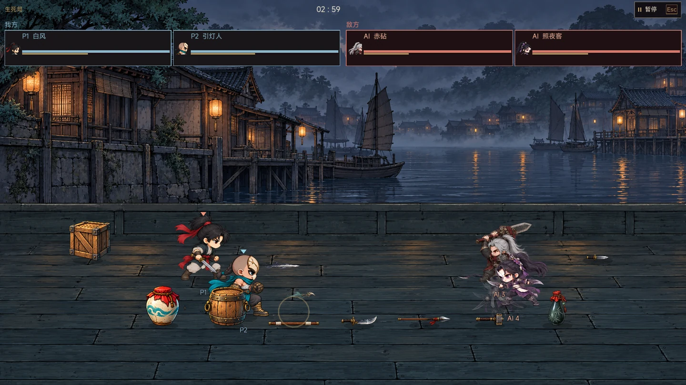
截潮监使作为首领登场，顺序通关后解锁。贴地水浪压住一条纵深，折返刃要求再判断一次回程，红光终结技则靠分段预警提示走位。第十一关燧盐师的三束火砂可格挡或换线躲开，两场战斗各自给防守方不同选择。
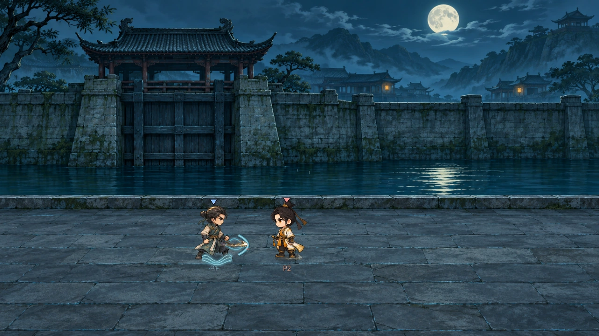
本节主线选人、剧情分镜与投掷画面来自 11 月 27 日的 0.23.0 Windows 实包验收。
人物传为十三名角色各编排三篇短传。每位已解锁的侠客先开放一篇简介，余下两篇由主线场景中的线索解锁。不同人的记载能互相补充同一段往事。
画册将角色目录、半身立绘和正文放在同一屏。右下角的小像沿用实战帧，在待机和原地踏步间切换。阅读到封存的篇章时，提示会把玩家指向对应关卡。

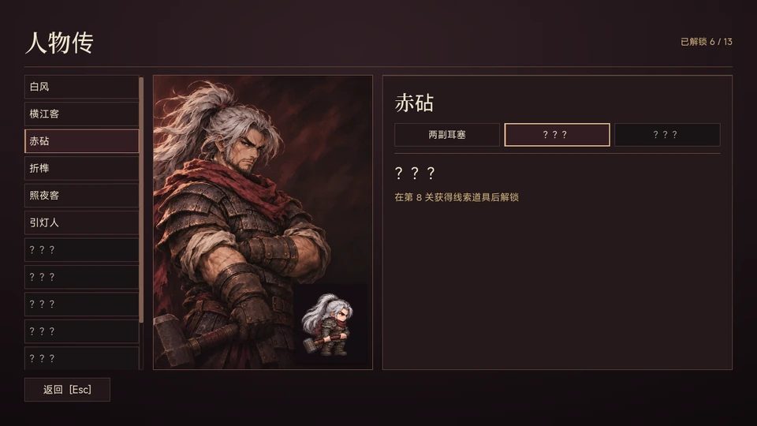
线索掉落后，靠近并按攻击键拾取。卷页解锁提示随即出现在战斗场景中，进度写入存档。这样既给通关后的回访一个目标，也让人物故事由玩家在场景中的行动推进。

11 月 28 日的 0.23.0 人物传线索与动态小像更新已通过 Windows 实包及横屏 Web 验证。Steam 发行筹备中。
面向横版动作和本地合作玩家，先用一场看得懂的交锋建立兴趣，再用分支连段和场景解法说明重玩价值。
用追击、退身和换线的前后对照开场。再接一段双人牵制或机关打断，让短视频也能看清动作和结果。
建议串起一次短教学、一场能借地形取胜的战斗和一位有清晰预警的首领。试玩重点观察玩家能否说出自己为什么受击，以及何时开始主动切换路线或收尾。
Windows 开发版、实机预告、商店截图和中英文物料草案已备。与发行方协作时，优先对齐试玩范围、手柄与本地双人验收、测试反馈和宣发档期。Steam 商店与试玩仍在筹备。